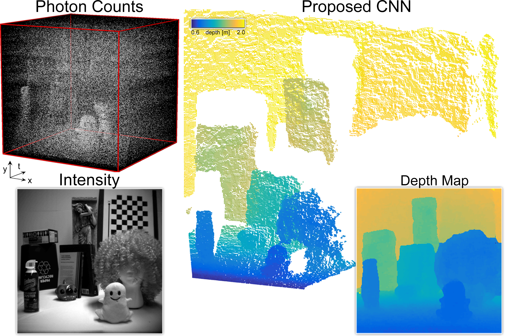
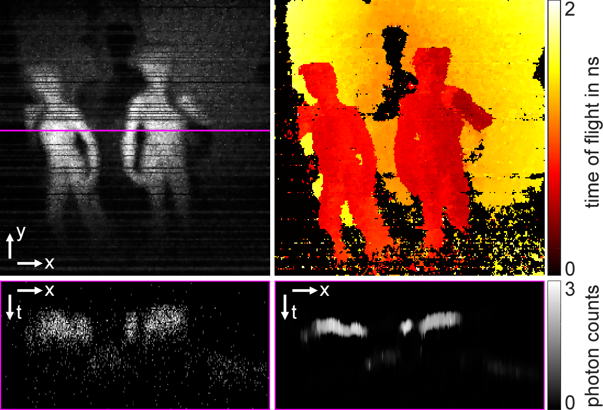
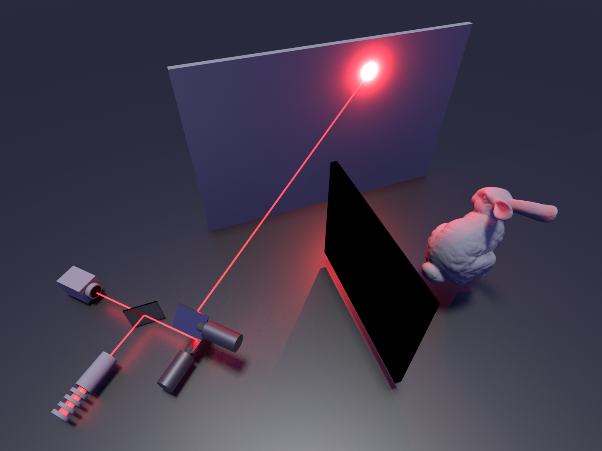
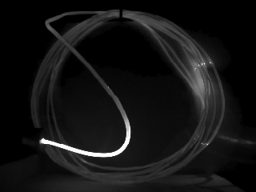
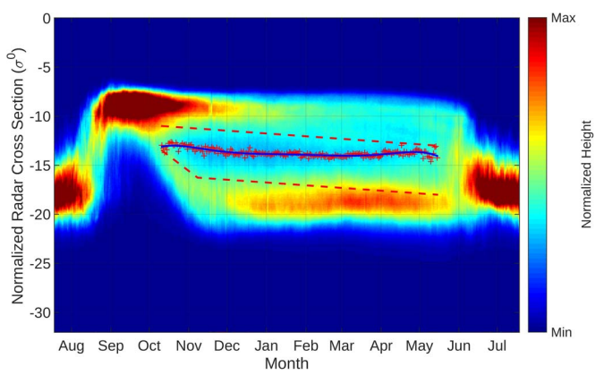
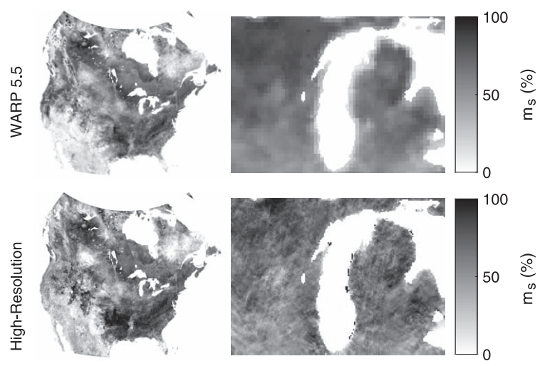

I'm a second-year Ph.D. student at Stanford University. I completed my B.S. and M.S. degrees in Electrical Engineering at Brigham Young University and am interested in problems in imaging, optimization, computer vision, and remote sensing. I'm currently working in Stanford's Computational Imaging Lab on time-of-flight sensors, imaging around corners, and next-generation LIDAR systems.
News
|
June 2018
|
I'm interning at the Intelligent Systems Lab at Intel this summer with Vladlen Koltun
|
|
March 2018
|
Our paper on seeing around corners was published in Nature!
|
Education
|
|
2016-Present
|
Stanford University
Ph.D Electrical Engineering |
|
|
2009-2016
|
Brigham Young University
B.S. Electrical Engineering Summa Cum Laude M.S. Electrical Engineering |
Research
|
2016-Present
|
Stanford University, Ph.D. Student
Advisor: Gordon Wetzstein Area: Computational Imaging, single photon detectors, virtual reality Project: Reconstruction of transient images, non-line of sight imaging, virtual reality rendering |
|
2014-2016
|
Brigham Young University, M.S. Student
Advisor: David Long Area: Radar Image Processing, Resolution Enhancement, Geoscience Project: Arctic ice classification, soil moisture estimation from C-band/Ku-band scatterometers and radiometers |
|
2013-2014
|
Brigham Young University, B.S. Student
Advisor: Aaron Hawkins Area: Semiconductor Devices, Cleanroom Fabrication, Circuit Design Project: Fabrication of a solid-state single ion detection unit |
Publications
|  |
D. B. Lindell, M. O'Toole, G. Wetzstein, “Single-Photon 3D Imaging with Deep Sensor Fusion”, ACM SIGGRAPH, 2018.
|
|  |
D. B. Lindell, M. O'Toole, G. Wetzstein, “Towards Transient Imaging at Interactive Rates with Single-Photon Detectors”, Proc. ICCP, 2018.
|
|  |
M. O’Toole, D. B. Lindell, G. Wetzstein, “Confocal Non-Line-of-Sight Imaging based on the Light Cone Transform”, Nature, 2018.
|
|  |
M. O’Toole, F. Heide, D. B. Lindell, K. Zang, S. Diamond, G. Wetzstein, “Reconstructing Transient Images from Single-Photon Sensors”, Proc. CVPR, 2017.
|
|  |
D. B. Lindell and D. G. Long, "Multiyear Arctic Sea Ice Classification Using OSCAT and QuikSCAT,"
in IEEE Transactions on Geoscience and Remote Sensing, vol. 54, no. 1, pp. 167-175, Jan. 2016.
doi: 10.1109/TGRS.2015.2452215
|
 |
D. B. Lindell and D. G. Long, "Multiyear Arctic Ice Classification Using ASCAT and SSMIS," in Remote Sensing, vol. 8, no. 4,
pp. 294, Mar. 2016. doi: 10.3390/rs8040294
|
|  |
D. B. Lindell and D. G. Long, "High-Resolution Soil Moisture Retrieval With ASCAT," in
IEEE Geoscience and Remote Sensing Letters,
vol. 13, no. 7, pp. 972-976, July 2016.
doi: 10.1109/LGRS.2016.2557321
|

{kind=link}
Selected Projects
|
Virtual Reality Motion Parallax with the Facebook Surround-360
Current virtual reality displays for viewing captured 360-degree stereo videos typically provide the wearer with a view from a single vantagepoint. We demonstrate that images from a commercial 360-degree camera rig can be processed to enable head-motion parallax while viewing with a head-mounted display. Such a viewing experience more closely mimics how we experience the real-world and can help to alleviate virtual-reality sickness and viewing discomfort. |
Experience
|
March 2016-August-2016
Mankato, MN (remote) |
Software For Hire
Position: Computer Vision Specialist Project: Developed fast, multithreaded vision algorithm for a pharmaceutical tablet counter using open source software, including Boost, OpenCV, and Point Cloud Library. |
|
|
June 2016-July-2016
Tucson, AZ |
Rincon Research Corporation
Position: Electrical Engineering Intern Project: Developed a cloud-based digital video recording system to stream and record live video. Integrated live broadcast television demodulation capability using GNU Radio and Rincon Research Corporation signal processing hardware. |